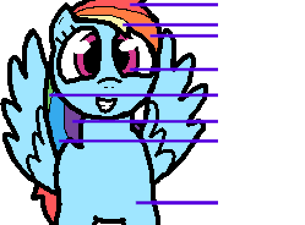
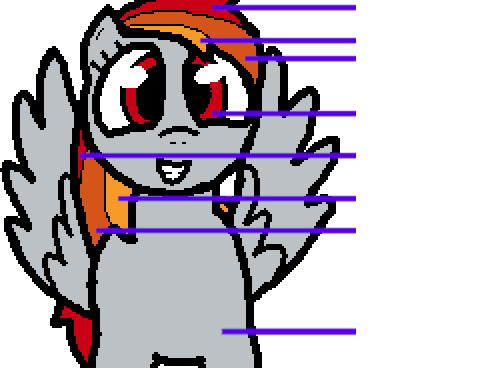

This page is divided into automatic editing and automatic swf rebuilding.
Create a directory to work in, get the sprites and ffdec
mkdir ~/bfededit && cd ~/bfededit
wget -c https://u.smutty.horse/mewzkxuschr.zip && unzip mewzkxuschr.zip && rm mewzkxuschr.zip -f
wget -c https://u.smutty.horse/mevzultwzre.zip && unzip mevzultwzre.zip && rm mevzultwzre.zip -f
wget -c https://u.smutty.horse/mevzucmydci.zip && unzip mevzucmydci.zip && rm mevzucmydci.zip -f
You should end up with something like this:
├── bfeq.swf
├── ffdec
│ ├── ffdec.jar
│ └── lib
├── list.txt
├── merge.sh
├── shapes
├── shapes(png)
│ ├── 1.png
│ ├── [...]
│ └── 9999.png
└── shapes(svg)
├── 1.svg
├── [...]
└── 9999.svg
If everithing looks fine you now have 2 options for editing depending on what you want to do, most recolors can bo done automatically:
For this example, I will turn Rainbow Dash into Tridashie on all sprites, so i need to know what colors to replace for what other color:
 
Now i have to copy all sprites with RD to 'shapes', this has to be done by hand sadly.
If you chose to use the .svg files, you can use something like sed to replace the colors on all files:
cd shapes
sed -i \
-e s/ff585a/c90015/g \
-e s/f9f3ac/f69b29/g \
-e s/ff7d43/d45419/g \
-e s/d5388d/c90015/g \
-e s/6fcf5d/c90015/g \
-e s/75459b/f69b29/g \
-e s/35aaed/d45419/g \
-e s/9fe6ff/bbc1c5/g \
./*
This could absolutely be done in a better way, but for works just run.
./merge.sh
rm bfedmod.swf #Remove modded .swf if it exists.
echo 'java -jar ../ffdec/ffdec.jar -replace ../bfeq.swf ../bfedmod.swf \' > command.txt #Writes first part of the command.
pushd shapes && dir -1 | parallel printf '{.}\ {}\ ' >> ../command.txt #Lists files and ids (1 1.svg), then adds them to the command.
echo '' >> ../command.txt
echo 'echo done' >> ../command.txt
bash ../command.txt #
popd #
It can sometimes take a bit, so don't assume it's stuck, just give it some time.
When it's done, you should have a file called 'bfedmod.swf' with all changes applied.